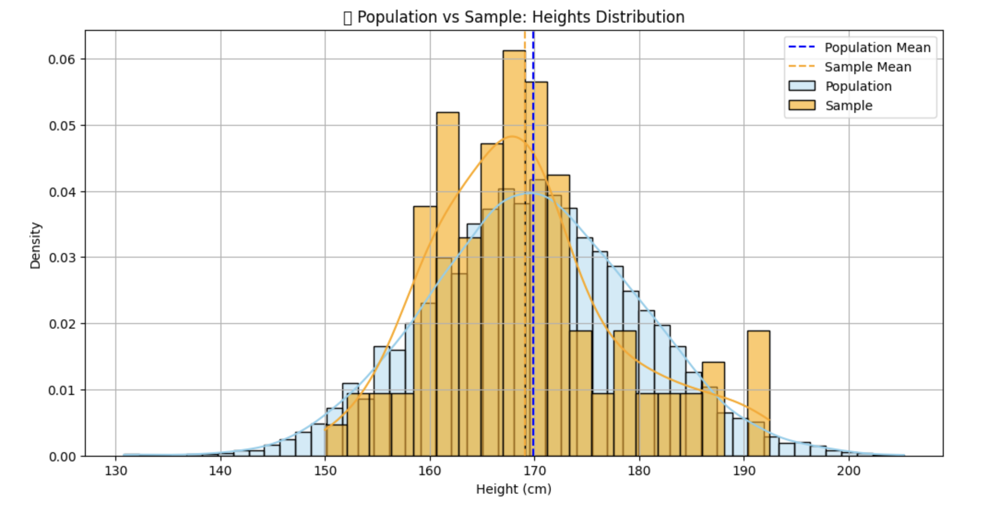

✅ Sample
📌 What is Sample?
A sample is a subset of individuals, items, or data points selected from a population for analysis.
A sample represents a small part of the population, used to draw conclusions (inferences) about the whole.
🧠 Why Use a Sample?
-
It is often impractical or impossible to measure the entire population.
-
Sampling is cheaper, faster, and more efficient.
-
If done correctly, a sample can provide accurate insights about the population.
📌 Real-World Examples:
| Study Goal | Population | Sample Example |
|---|---|---|
| Average income of people in India | All Indian citizens | 2,000 people randomly selected |
| Satisfaction level of Amazon customers | All Amazon users | 500 customers who recently ordered |
| Average height of university students | All 5,000 university students | 100 randomly chosen students |
🐍 Python Example – Sampling from a Population
Let’s build on the previous population of student heights, and now take a sample:
import numpy as np
import matplotlib.pyplot as plt
import seaborn as sns
# Assume previous population is already generated
population = np.random.normal(loc=170, scale=10, size=5000)
# Step 1: Draw a random sample from population (e.g., 100 students)
sample = np.random.choice(population, size=100, replace=False)
# Step 2: Plot both population and sample
plt.figure(figsize=(12, 6))
# Population histogram
sns.histplot(population, bins=50, kde=True, color='skyblue', label='Population', stat='density', alpha=0.4)
# Sample histogram
sns.histplot(sample, bins=20, kde=True, color='orange', label='Sample', stat='density', alpha=0.6)
# Mean lines
plt.axvline(np.mean(population), color='blue', linestyle='--', label='Population Mean')
plt.axvline(np.mean(sample), color='orange', linestyle='--', label='Sample Mean')
plt.title('📊 Population vs Sample: Heights Distribution')
plt.xlabel('Height (cm)')
plt.ylabel('Density')
plt.legend()
plt.grid(True)
plt.show()

📊 Interpretation:
-
The blue curve shows the full population.
-
The orange curve shows the sample drawn from the population.
-
Both curves should have similar shapes, and the sample mean should be close to the population mean.
🔁 Summary
| Term | Description | Symbol |
|---|---|---|
| Population | Entire group (e.g., all 5,000 students) | N |
| Sample | Subset of the population (e.g., 100 students) | n |
🎯 Why Sampling Techniques Matter
Choosing the right sampling method ensures that your sample:
-
Represents the population fairly.
-
Reduces bias.
-
Improves accuracy of statistical inferences.
📚 Types of Sampling Techniques
1. 🎲 Simple Random Sampling (SRS)
Every member of the population has an equal chance of being selected.
✅ When to Use: When the population is homogeneous.
📌 Python Example:
sample_srs = np.random.choice(population, size=100, replace=False)
2. 📊 Stratified Sampling
The population is divided into strata (groups), and random samples are taken from each group.
✅ When to Use: When the population has distinct subgroups (e.g., gender, age group).
📌 Python Example:
# Simulate population with gender
import pandas as pd
population_df = pd.DataFrame({
'height': population,
'gender': np.random.choice(['Male', 'Female'], size=5000, p=[0.5, 0.5])
})
# Stratified sampling: 50 males and 50 females
sample_stratified = population_df.groupby('gender').sample(n=50, random_state=42)
3. 🧾 Systematic Sampling
Select every k-th element from a list after a random start.
✅ When to Use: When data is ordered or evenly distributed.
📌 Python Example:
k = 50 # Select every 50th person
start = np.random.randint(0, k)
sample_systematic = population[start::k][:100]
4. 📍 Cluster Sampling
The population is divided into clusters (e.g., schools, cities), and entire clusters are randomly selected.
✅ When to Use: When the population is naturally grouped and listing all elements is difficult.
📌 Python-style Pseudocode:
# Imagine schools as clusters and select few whole schools
# Not implemented without full data structure of clusters
📐 Estimating Population Parameters from a Sample#
1. 📏 Sample Mean ≈ Population Mean
sample_mean = np.mean(sample)
population_mean = np.mean(population)
2. 📊 Sample Standard Deviation
Use ddof=1 to get the unbiased estimate.
sample_std = np.std(sample, ddof=1)
3. 📈 Confidence Interval for the Mean
Estimate population mean using a confidence interval (e.g., 95%):
import scipy.stats as stats
confidence = 0.95
n = len(sample)
mean = np.mean(sample)
std_err = stats.sem(sample) # Standard error
margin = stats.t.ppf((1 + confidence) / 2, df=n-1) * std_err
lower_bound = mean - margin
upper_bound = mean + margin
print(f"95% Confidence Interval for Population Mean: ({lower_bound:.2f}, {upper_bound:.2f})")
✅ Summary Table
| Technique | Use Case | Bias Risk |
|---|---|---|
| Simple Random | Equal chance for all | Low |
| Stratified | Population has meaningful subgroups | Very Low |
| Systematic | Regularly spaced selection | Medium |
| Cluster | Population naturally in groups | Higher |